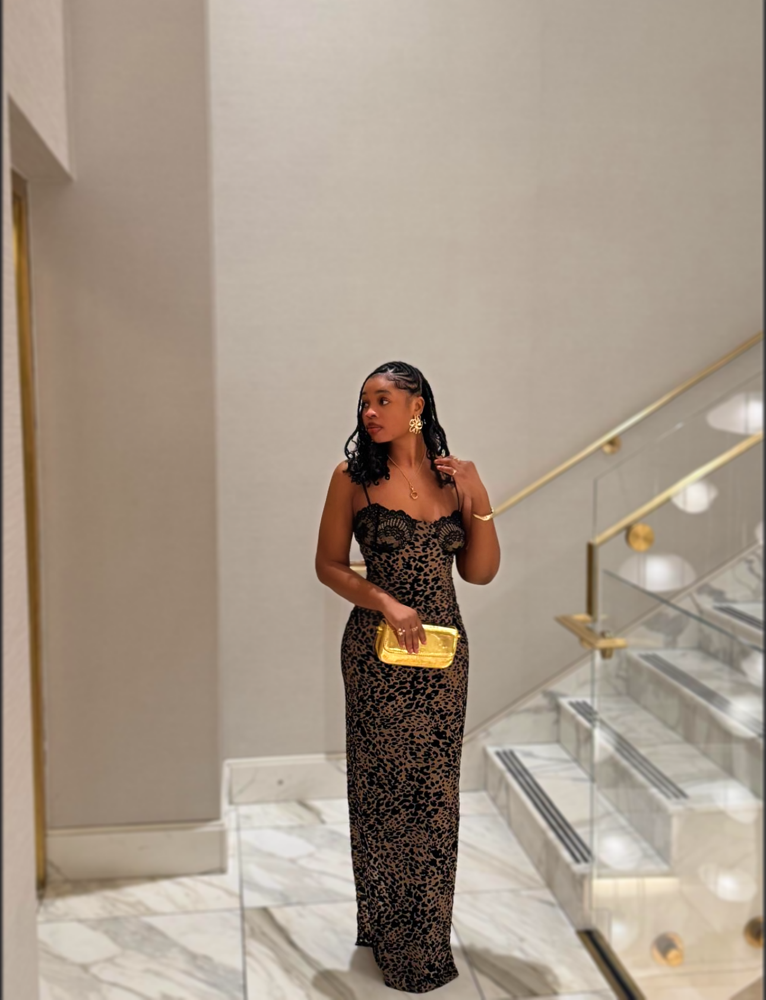
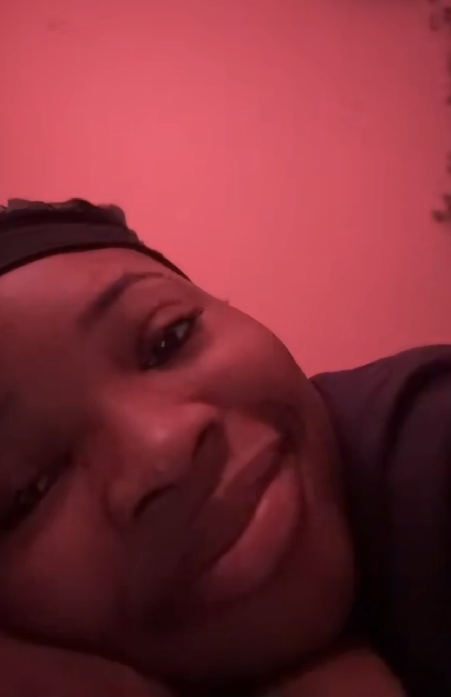
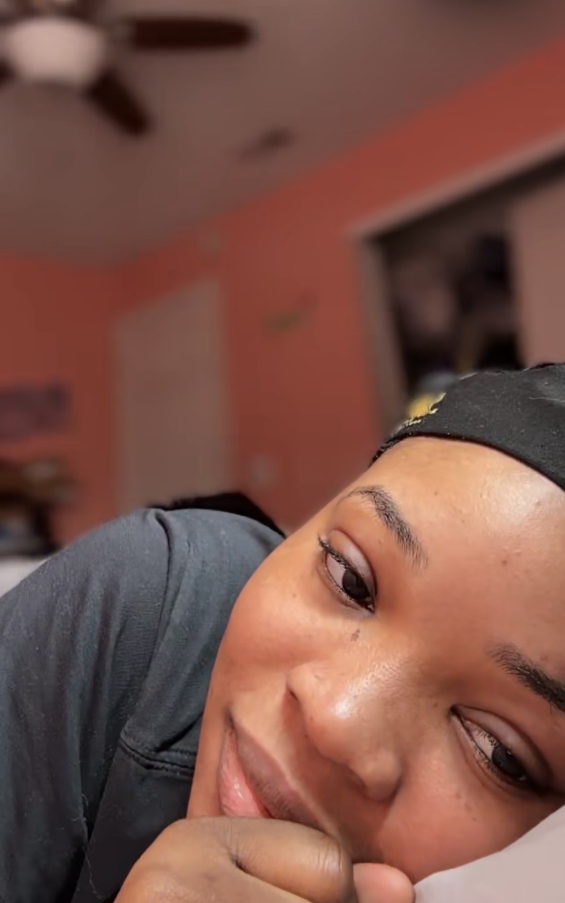
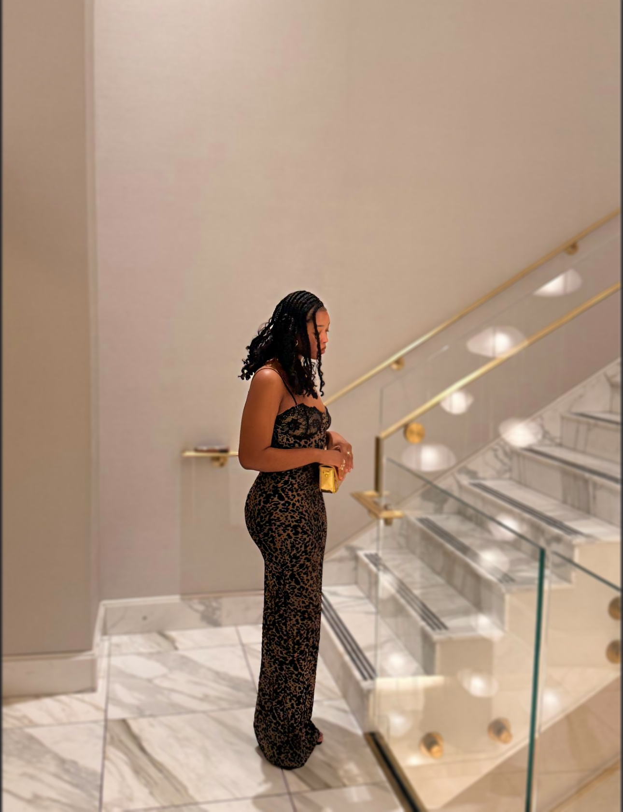

What Started With Heyy ❤️
Coded with Love. This isn’t just a website. It’s my heart… in words.
Our Beginning
It still surprises me how something so simple turned into something so meaningful. You viewed my TikTok profile. I viewed yours back. I followed you. We said “Hi.” And somehow… that “Hi” became conversations I didn’t want to end. That same day, you told me about things you were going through. Real things, deep things. I remember thinking… why does it feel so easy to talk to you? It felt natural. Comfortable. Safe. Like I had known you longer than I actually had. I could literally picture you being My Fav Yapper lol. I prayed to God to give me my own person someday. I don’t know yet what the full story is… but meeting you felt like a moment worth paying attention to.
Bisola Mi
What I See In You
You’re genuine. And that is rare. Your smile? Honestly… second to none. The kind that makes someone else smile just by seeing it. You’re well spoken. Thoughtful. Funny. Present. Whenever we talk, I feel seen. Not tolerated. Not managed. Seen. Your eyes… beautiful. Not just physically, there’s softness in them. You’re the kind of woman someone protects, not because you’re weak… but because you’re precious. Sharon My A-List Girl
How You Make Me Feel
I like that I can talk to you about my feelings. I feel appreciated when we talk. I feel included in your life. I feel like you carry me along with what you’re doing. Every time we video call… I can literally see you smiling. That smile makes me want to protect your happiness. To add to it. To be part of the reason it exists. You’re becoming my favorite person. My peace after a long day.
Oluwakemisola Mi
The Distance
I won’t pretend distance is nothing. But sometimes beginnings happen like this. Maybe we met this way first so we could build something deeper. I know your last relationship started long distance too, and I understand why you might have doubts. But I want you to know clearly: I’m not here to hurt you. I’m not here to waste your time. I’m here because I see you… and I want you intentionally.
My Favorite Glass of wine
Why You
I want you specifically because of how this started. The connection. The comfort. The honesty. You’re a soft babe with so much love to give. And I have love to give too. What I want is simple: Someone who validates my emotions. Someone I can vent to. Someone who won’t get tired of me. Someone who feels like home, I know you want the same. And with you… I see that possibility.

Awelewa Mi
My Promise
I won’t promise perfection.
But I promise effort.
Consistency. Honesty. Care.
I promise to be there for you, not only when things are easy, but when they’re heavy too.
I enjoy being there for you already.
And if you allow me… I’ll keep showing up.
The first 48 Seconds of the Song "Adore" by Fireboy DML explains a little about how i feel.
I Love YOU, Bisola.